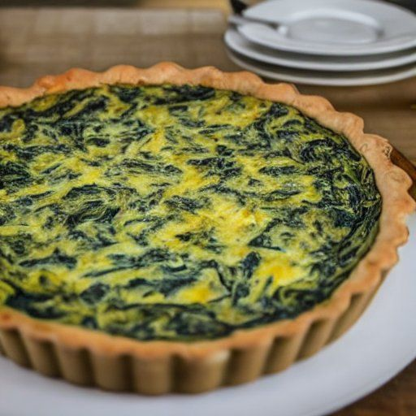

Quiche aux épinards
Portions: 6
Ingrédients
-
1 3/4 t de farine

-
1/2 t de beurre salé
-
65 mL d'eau très froide
-
6 oeufs
-
1 1/2 t de crème 35%
-
1/2 t de lait
-
sel
-
poivre
-
2 oignons
-
70 g d'épinards
-
1 1/2 t de mozzarella
-
12 tranches fines de brie
Pâte brisée
Quiche
Instructions
Préparer une grande abaisse dans un moule en déposant de la pâte sur le dessous et sur les côtés.
Battre les œufs avec la crème, le lait, le sel et le poivre.
- 6 oeufs
- 1 1/2 t de crème 35%
- 1/2 t de lait
- sel
- poivre
Dans une casserole, faire revenir les oignons avec un peu d'huile. Ajouter les épinards vers la fin de la cuisson.
- 2 oignons
- 70 g d'épinards
Ajouter les légumes et 1 1/2 t de mozzarella au mélange d'œufs battus. Verser dans l'abaisse.
Couper 12 tranches fines de brie et déposer sur la quiche.
Cuire au four 190 °C (375 °F) pendant environ 45 minutes. La quiche devrait être légèrement dorée. Laisse refroidir un peu avant de servir.